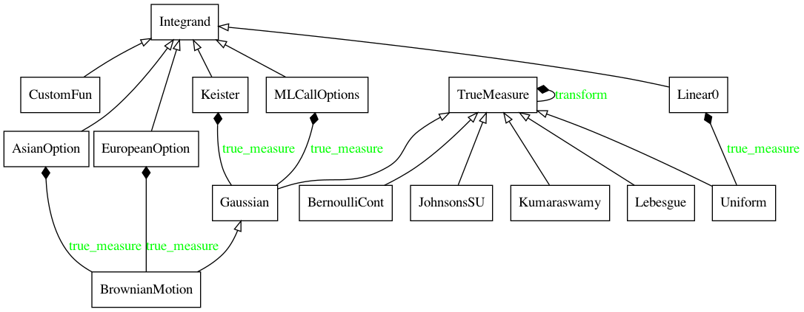
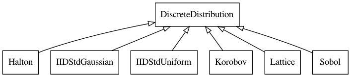
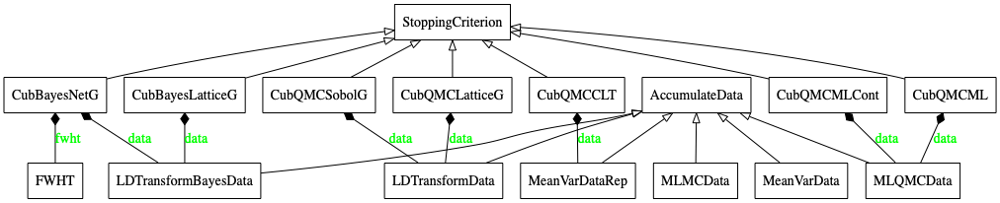
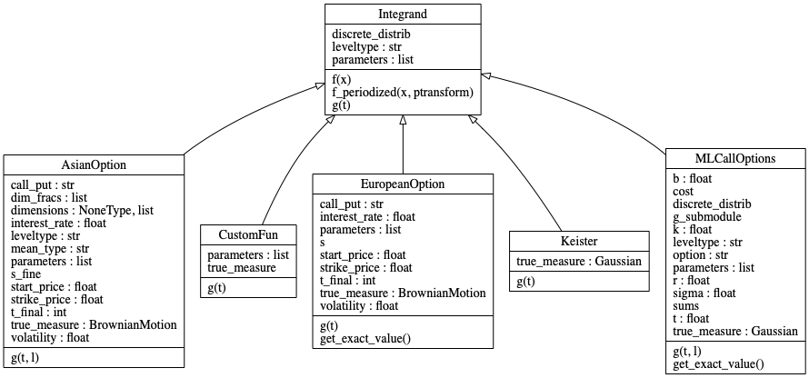
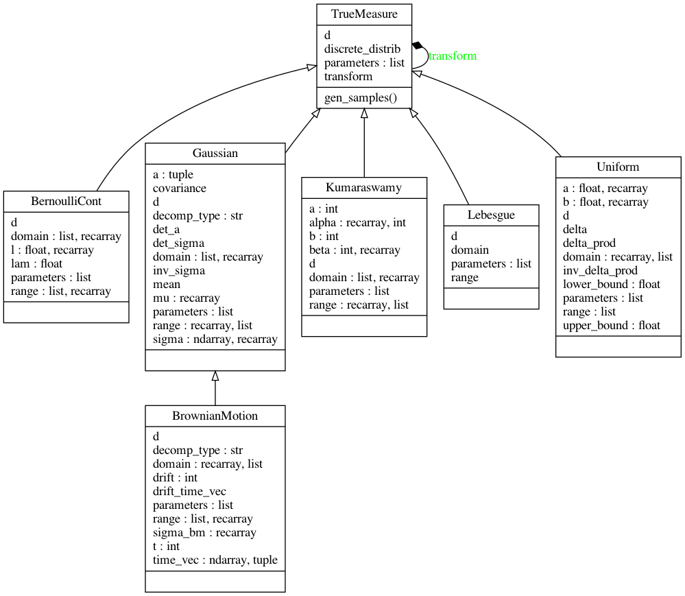
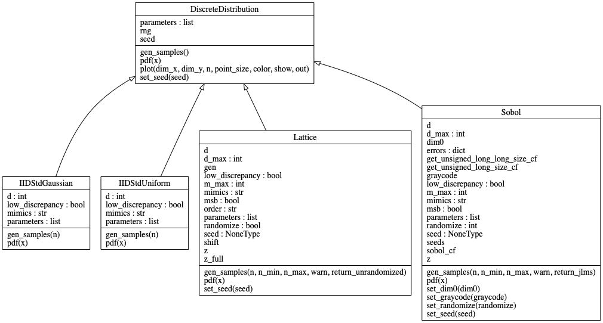
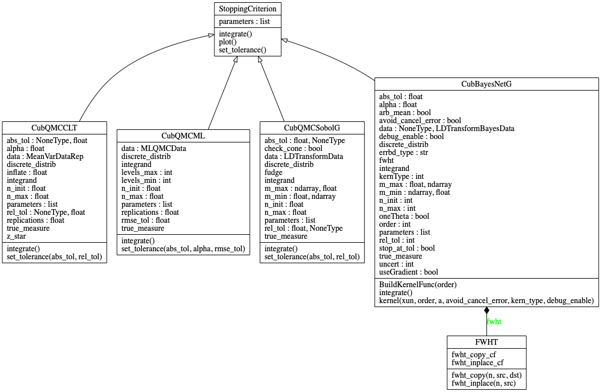
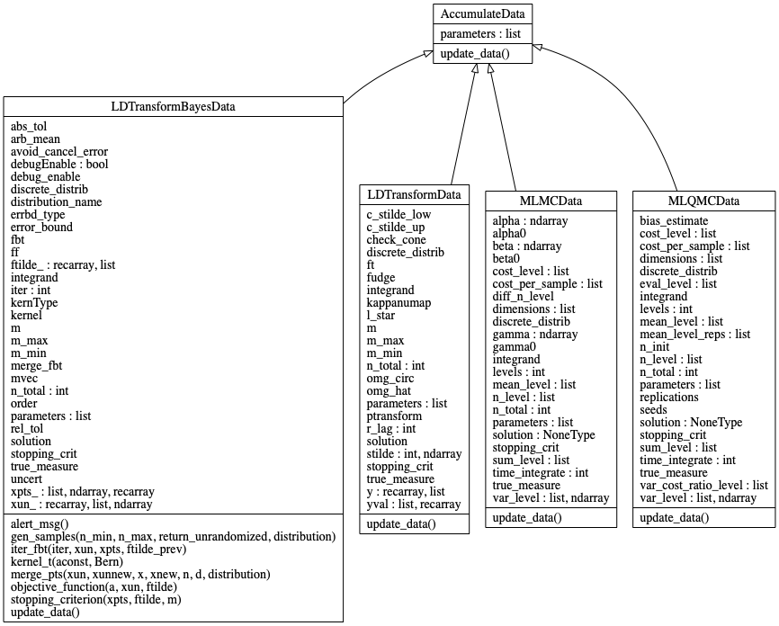
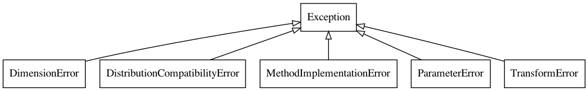
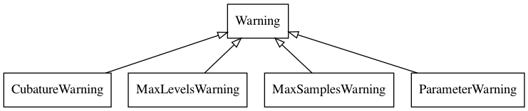

Visualizing the Internals of Object Classes in QMCPy
Sou-Cheng Choi and Aleksei Sorokin
February 25, 2021
This post uses UML diagrams to explain QMCPy's object-oriented architecture and relationships among its core classes.
As a software library grows, so does its complexity. This comment
certainly applies to QMCPy [1], our Python library for high-dimensional
numerical integration.
UML (Unified Modelling Language) diagrams
are a helpful tool for visualizing QMCPy's intricate object-oriented
framework. These network diagrams display an object's methods,
attributes, dependencies, and inheritance relationships. We have used the
Python tool pyreverse to
automatically generate such UML diagrams, which we have included in the
QMCPy documentation. For a
comprehensive introduction to various aspects of UML and its latest
version 2.5, readers may refer to, for example, [2].
Overview of QMCPy Classes
First, we overview the relationships between the five main abstract classes in QMCPy version 1.0:
Integrand,TrueMeasure,DiscreteDistribution,StoppingCriterion, andAccumulateData.
For clearer illustration and better readability, we may not include all subclasses implemented in QMCPy in the subsequent diagrams. Interested readers are referred again to the QMCPy documentation.
In a UML class diagram, each class is contained in a rectangular box. A child class has an edge with a triangular arrow head that points to its parent. If a class C internally uses an object of another class D, the edge would have a solid black diamond head from class D pointing to C. A green label of an edge recaps the name of a field in the class being pointed to, realized by the class from which the edge stems.
The first UML class diagram shows the abstract Integrand class and its
implementations (children). Notice that many integrands used to price
financial options, specifically AsianOption, EuropeanOption, and
MLCallOptions, utilize BrownianMotion, a child of the Gaussian
class and grandchild of the abstract TrueMeasure class. In particular,
AsianOption and EuropeanOption contain a field called true_measure,
which is highlighted in green in the UML class diagram below and
implemented as a BrownianMotion object.
{kind=link}

Integrand class and selected implementations.The second UML class diagram is DiscreteDistribution and its
subclasses.
{kind=link}

DiscreteDistribution and its subclasses.The last high-level diagram relates StoppingCriterion and
AccumulateData. In particular, every StoppingCriterion
implementation uses an AccumulateData implementation for storing the
parameters that were used and set during the numerical approximation
algorithm. The following class diagram includes only Quasi-Monte Carlo
stopping criteria, but QMCPy actually also contains a number of standard
(IID) Monte Carlo stopping criteria as well.
{kind=link}

StoppingCriterion and AccumulateData.More Details of QMCPy Classes
In the remainder of this blog, we will present in greater detail the internal members of each main class. Each class is listed at the top of a rectangular box with its public fields and methods in the middle and bottom sections of the box, respectively. A child class inherits the methods of its parent class. However, a child class may override the parent's handed down method. In this case, the child class method is listed again at the bottom of its UML box.
The Integrand class has three main fields and methods. Each of its
five subclasses has its own specific implementation of the integrand,
\(g\), but shares the same method, \(f\), that returns the weighted average
of the transformed function at nodes from the DiscreteDistribution.
The specific weights, transformation, and sampling mechanism are
determined by the associated realizations of the TrueMeasure and
DiscreteDistribution classes. For instance, the Keister integrand
uses the Gaussian true measure and may be paired with any
DiscreteDistribution instance.
{kind=link}

Integrand.QMCPy has implemented five children classes for TrueMeasure. A child
class of TrueMeasure has an attribute called discrete_distrib that
is a DiscreteDistribution instance. This enables the main
gen_samples method to select and transform points accordingly.
{kind=link}

TrueMeasure.DiscreteDistribution in QMCPy plays a central role in (Q)MC
algorithms, which are iterative in nature. In every iteration, a concrete
subclass of DiscreteDistribution decides the coordinates of sampling
points for integrand evaluations, which are then aggregated into an
average value that serves as an estimate of a given integral problem. We
refer readers to an earlier blog for a succinct presentation of
low discrepancy sampling points
used in QMC algorithms versus IID sampling schemes in more traditional
MC methods.
{kind=link}

DiscreteDistribution.QMCPy's abstract StoppingCriterion class currently has the largest
number of instances. Each concrete implementation has two main abstract
methods, set_tolerance and integrate. The method set_tolerance
allows users to reset absolute and/or relative tolerances used in the
integrate method. Calling integrate will construct an
AccumulateData object to generate and house data such as sampling
indices, function evaluations, and expectation approximations.
{kind=link}

StoppingCriterion.As mentioned, an AccumulateData subclass collects data throughout the
numerical integration computation. The method update_data collects
statistical estimates such as the sample mean, sample variance, and
approximate time per sample. An AccumulateData instance can often be
used by multiple StoppingCriterion. For example, LDTransformData is
used by both the CubQMCLatticeG and CubQMCSobolG stopping criteria.
Since an AccumulateData object knows about the four other components
in the QMC problem, printing the data object displays a nice summary of
all relevant fields and parameters.
{kind=link}

AccumulateData.Lastly, QMCPy has extended Python's Warning and Exception classes to
provide developers specific types of errors and warnings.
{kind=link}

{kind=link}

We hope these UML diagrams help both researchers and developers better
understand the QMCPy architecture. The diagrams throughout this blog are
reproducible using the pyreverse package whose S option will reveal
extra details including private fields and methods.
References
- Choi, S.-C. T., Hickernell, F., McCourt, M., & Sorokin, A. QMCPy: A quasi-Monte Carlo Python Library. https://qmcsoftware.github.io/QMCSoftware/. 2020.
- Unhelkar, B. Software Engineering with UML. CRC Press, 2017.